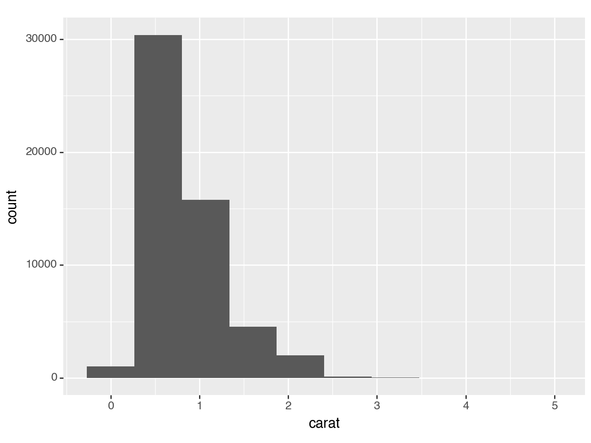
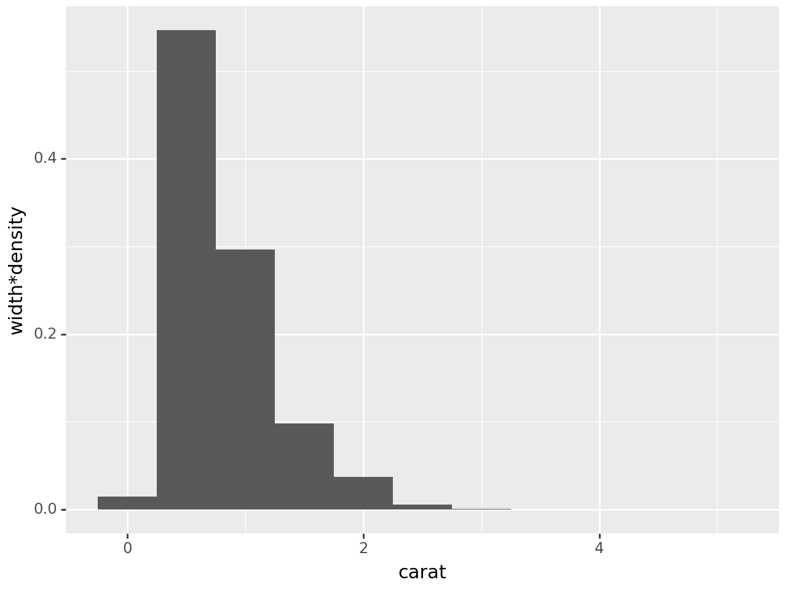
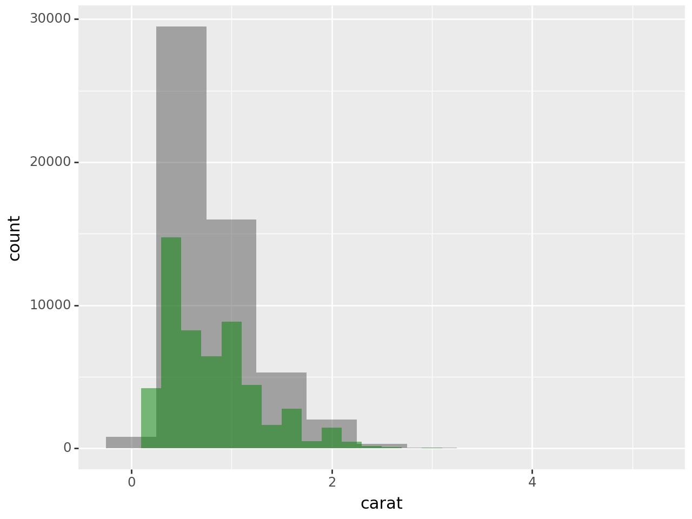
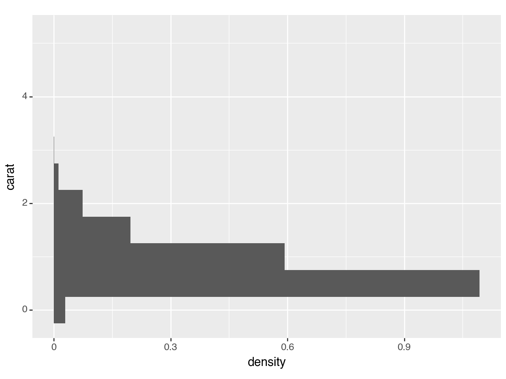
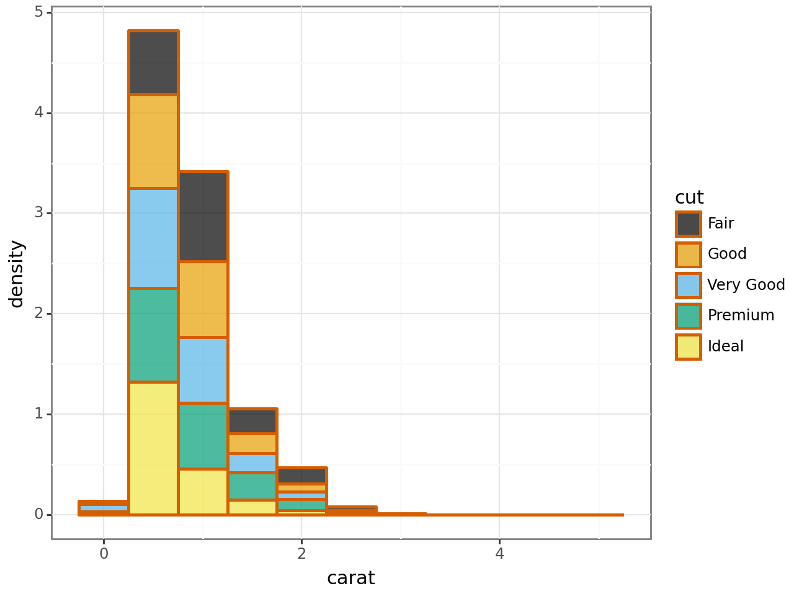
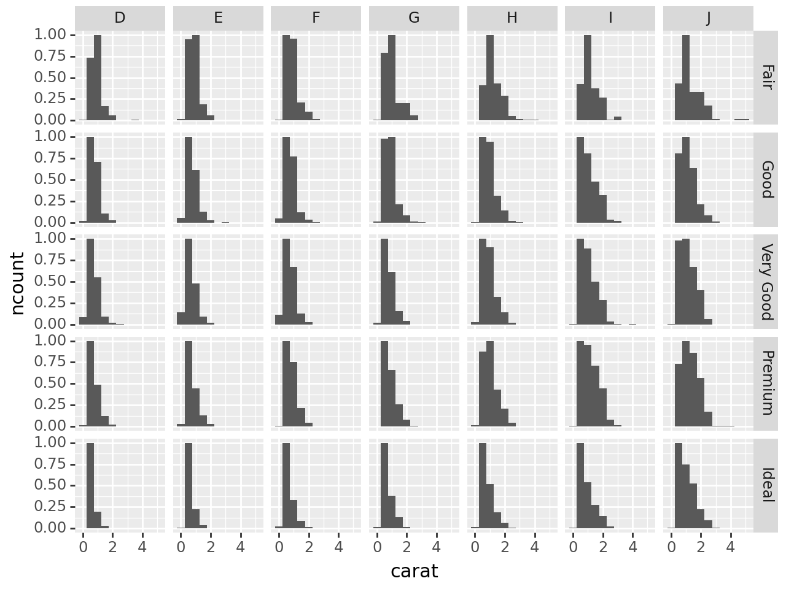

import pandas as pd
import numpy as np
from plotnine import (
ggplot,
aes,
after_stat,
geom_histogram,
facet_wrap,
facet_grid,
coord_flip,
scale_y_continuous,
scale_y_sqrt,
scale_y_log10,
scale_fill_manual,
theme_bw,
theme_xkcd
)
from plotnine.data import diamonds
from mizani.formatters import percent_format Histograms
In [1]:
Histograms
Visualise the distribution of a variable by dividing the x-axis into bins and counting the number of observations in each bin. Histograms display the counts with bars.
You can define the number of bins (e.g. divide the data five bins) or define the binwidth (e.g. each bin is size 10).
Distributions can be visualised as: * count, * normalised count, * density, * normalised density, * scaled density as a percentage.
In [2]:
diamonds.head(5)| carat | cut | color | clarity | depth | table | price | x | y | z | |
|---|---|---|---|---|---|---|---|---|---|---|
| 0 | 0.23 | Ideal | E | SI2 | 61.5 | 55.0 | 326 | 3.95 | 3.98 | 2.43 |
| 1 | 0.21 | Premium | E | SI1 | 59.8 | 61.0 | 326 | 3.89 | 3.84 | 2.31 |
| 2 | 0.23 | Good | E | VS1 | 56.9 | 65.0 | 327 | 4.05 | 4.07 | 2.31 |
| 3 | 0.29 | Premium | I | VS2 | 62.4 | 58.0 | 334 | 4.20 | 4.23 | 2.63 |
| 4 | 0.31 | Good | J | SI2 | 63.3 | 58.0 | 335 | 4.34 | 4.35 | 2.75 |
If you create a basic histogram, you will be prompted to define the binwidth or number of bins.
In [3]:
(
ggplot(diamonds, aes(x='carat'))
+ geom_histogram()
)/Users/hassan/scm/python/plotnine/plotnine/stats/stat_bin.py:109: PlotnineWarning: 'stat_bin()' using 'bins = 142'. Pick better value with 'binwidth'.
You can define the width of the bins, by specifying the binwidth inside geom_histogram().
In [4]:
(
ggplot(diamonds, aes(x='carat'))
+ geom_histogram(binwidth=0.5) # specify the binwidth
)
Or you can define the number of bins by specifying bins inside geom_histogram(). Note, the example below uses 10 bins, however you can’t see them all because some of the bins are too small to be noticeable.
In [5]:
(
ggplot(diamonds, aes(x='carat'))
+ geom_histogram(bins=10) # specify the number of bins
)
There are different ways to visualise the distribution, you can specify this using the y argument within aes(). In the example below I’m using the default setting: raw count with after_stat('count').
In [6]:
(
ggplot(diamonds, aes(x='carat',
y=after_stat('count') # specify each bin is a count
))
+ geom_histogram(binwidth=0.50)
)
You can normalise the raw count to 1 by using after_stat('ncount'):
In [7]:
(
ggplot(diamonds, aes(x='carat',
y=after_stat('ncount') # normalise the count to 1
))
+ geom_histogram(binwidth=0.50)
)
You can display the density of points in a bin, (this is scaled to integrate to 1) by using after_stat('density'):
In [8]:
(
ggplot(diamonds, aes(x='carat',
y=after_stat('density') # density
))
+ geom_histogram(binwidth=0.50)
)
The proportion of bins can be shown, in the example below the bin=0.5 accounts for about ~55% of the data:
In [9]:
(
ggplot(diamonds, aes(x='carat',
y=after_stat('width*density')) # show proportion
)
+ geom_histogram(binwidth=0.5)
)
We can also display counts as percentages by using the percent_format() which requires the mizani.formatters library:
In [10]:
(
ggplot(diamonds, aes(x='carat', y=after_stat('width*density')))
+ geom_histogram(binwidth=0.5)
+ scale_y_continuous(labels=percent_format()) # display labels as a percentage
)
Instead of using stat you can use stat_bin defined within geom_histogram(), this is useful if you want to layer a few different plots in the one figure.
In [11]:
(
ggplot(diamonds, aes(x='carat'))
+ geom_histogram(binwidth=0.5, alpha=0.5)
+ geom_histogram(binwidth=0.2, alpha=0.5, fill='green')
)
You can also flip the x-y coordinates:
In [12]:
(
ggplot(diamonds, aes(x='carat', y=after_stat('density')))
+ geom_histogram(binwidth=0.5)
+ coord_flip()
)
You can visualise counts by other variables using fill within aes():
In [13]:
(
ggplot(diamonds, aes(x='carat', y=after_stat('count'),fill='cut'))
+ geom_histogram(binwidth=0.5)
)
You can visualise too-small-to-see bars by transforming the y-axis scaling by using scale_y_sqrt() square-root scale or scale_y_log10() for a log-scale (similarly use scale_x_sqrt() and scale_x_log10() to transform the x-axis).
In [14]:
(
ggplot(diamonds, aes(x='carat', y=after_stat('count')))
+ geom_histogram(binwidth=0.5)
+ scale_y_sqrt() # square root scale
)
In [15]:
(
ggplot(diamonds, aes(x = 'carat', y = after_stat('count')))
+ geom_histogram(binwidth = 0.5)
+ scale_y_log10() # log scale
)
Change the look of your plot:
In [16]:
(
ggplot(diamonds, aes(x='carat', y=after_stat('density')))
+ geom_histogram(binwidth=0.5,
fill='green', # change the fill colour (one colour)
colour='pink', # change the outline
size=2, # change the thickness of the outline
alpha=0.7 # change the transparency
)
+ theme_xkcd() # play with themes (look/arrangement)
)
Another change, this time changing the fill colours manually:
In [17]:
(
ggplot(diamonds, aes(x='carat',
y=after_stat('density'),
fill='cut' # change the fill colour using another variable
))
+ scale_fill_manual(values=["#000000", "#E69F00", "#56B4E9", "#009E73", "#F0E442"]) # change the fill colour
+ geom_histogram(binwidth=0.5,
colour="#D55E00",# change the outline
size=1, # change the thickness of the outline
alpha=0.7 # change the transparency
)
+ theme_bw() # play with themes (look/arrangement)
)
When faceting histograms with scaled counts/densities, they are normalised by each facet, and not overall. Here’s an example of a facet wrap:
In [18]:
(
ggplot(diamonds, aes(x='carat', y=after_stat('ncount')))
+ geom_histogram(binwidth=0.5)
+ facet_wrap('color') # facet wrap
)
Here’s an example of a facet grid with the count normalised in each grid:
In [19]:
(
ggplot(diamonds, aes(x='carat', y=after_stat('ncount')))
+ geom_histogram(binwidth=0.5)
+ facet_grid('cut ~ color')
)